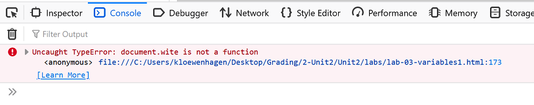

When Things Go Wrong - Introducing Debugging
Here's how we're going to try to debug our JavaScript programs.
The Issue
JavaScript is not very good about telling us something is wrong. Look at this demo (don't change anything - just look at it) to see what I mean: Example 4: Typical JavaScript Error
Using the Firefox Error Console
Next time we look at Demo 1, you will be using the Firefox Web Console to help you debug the JavaScript code. Once you get the Demo 1 page open in your browser, you will follow these steps to turn on the Web Console.
Click on the Firefox menu, select Web Developer, and then select Web Console, like this:
The console appears at the bottom of the window, showing you the errors in your code.
Web Console will show JavaScript errors as well as CSS errors.

Look to the far right of the error, each error listed shows the error and the file and line number where the error occurred:
If you click on the error line link, the error console will take you directly to that line in the code:
You can't make changes to your file in this window, but now you know what to fix. Now you can return to the Notepad++ editor to fix the error.
That's it! That's the process we use to debug web pages using he Firefox Web Console.
Let's Try it!
Using the technique you just learned for turning on the Firefox Error Console, use the console now to debug Example 4: Typical JavaScript Error
Once you find the error, be sure to proceed to Notepad++ and fix it. And, of course, load the page in the browser and test it again to make sure it's working.
Using Comments to Help Debug
You may have noticed that sometimes when your JavaScript code doesn't return output, it's not because of the "document.write" statements. Sometimes even the Error Console can't tell you where the problem is. Any syntax error on any line of your code can prevent your output from displaying, and the Error Console has to make its best guess as to what the error is.
One effective method of pinpointing where the error is, is to eliminate or "comment out" lines of code until you find the one line that's causing the error. Take a look at Demo 2 for an example: Example 5: Using Comments to Debug
Now go back to the main page to continue...